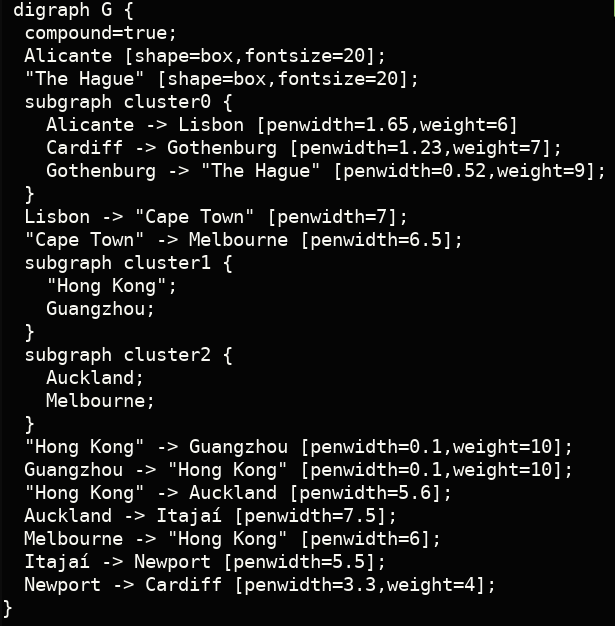
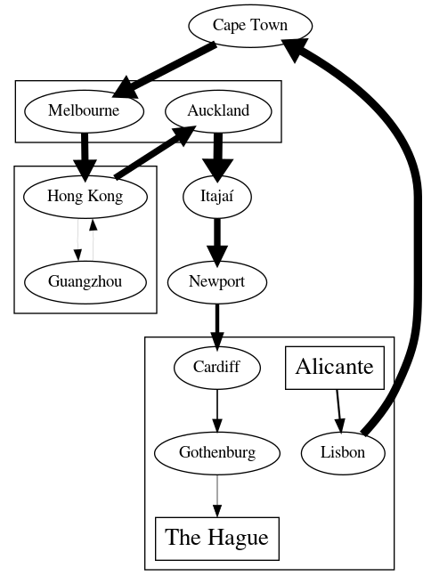
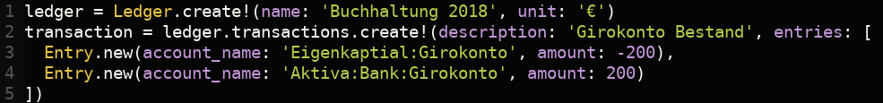
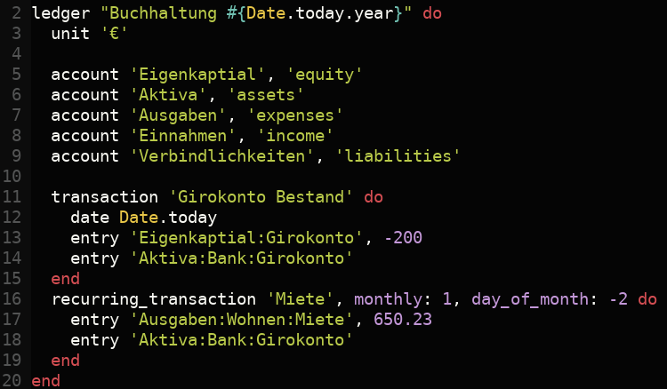
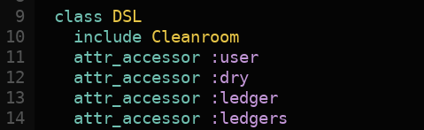
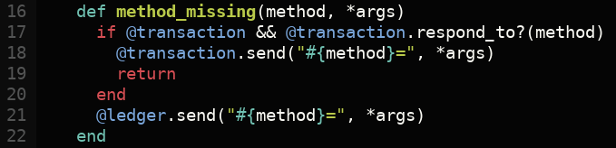
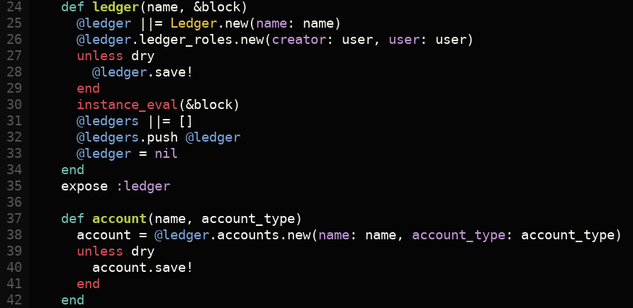
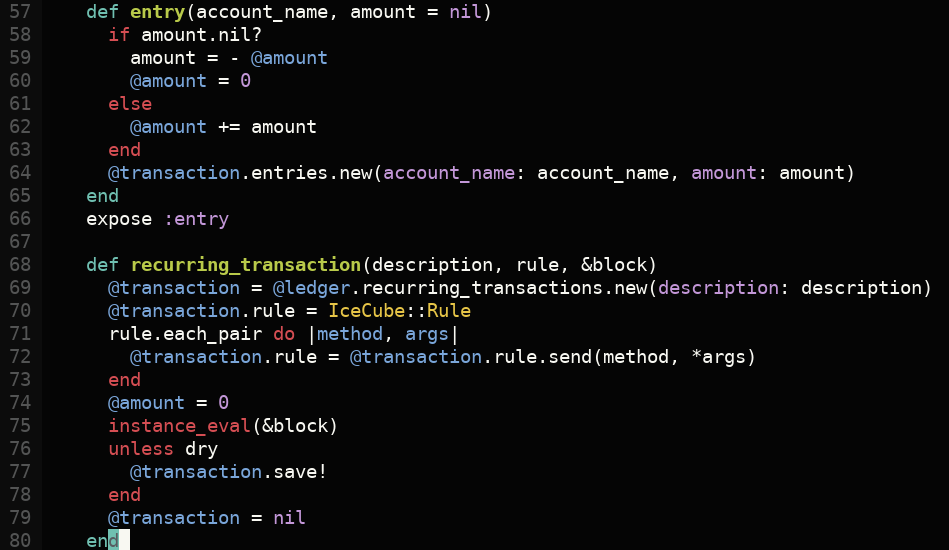

# Domain
# Specific
# Languages
## DSL mit Ruby
_Thomas R. Koll_
https://tomk32.de
### Was ist eine DSL
- Sprache für einen spezielle Aufgabe
- Kann auf einer anderen Sprache aufbauen
- Grenze zu kompletten Sprachen ist verwischt
- Manche Host-Languages sind besser geeignet
### Beispiele
- SuperCollider:
`{ SinOsc.ar(800, 0, 0.1) + PinkNoise.ar(0.01) }.play;`
- unix tools wie make, sed, grep
- GraphViz, POVRay, Lindenmayer System
- SQL, HTML
- Lua in AAA Videogames
### GraphViz

### GraphViz

### Was zeichnet sie aus
- Deklarativ und expressiv
- Kaum Redundanz
- Limitierter Umfang
- Ablauf ohne Eingaben
- Daten werden üblicherweise gespeichert
- Leichter zu verstehen
### Und in ruby
- blocks, yield
- method_missing
- Überall zu finden
### Beispiele in Ruby
- Rake
- RSpec
- capistrano
- xmlbuilder
#### Rake
desc "export tracker data"
task "export_projects" do
stage = Tracker.get_current_stage
positions = Tracker.get_positions(stage)
file = File.open("vor-positions-stage-#{stage}.txt", 'a')
positions.each do |boat|
file.puts [boat.date.to_s, boat.name, boat.rank, boat.lon, boat.lat].join(',')
end
file.close
end
$ rake export_projects
### RSpec
class Sailboat
def keel
return @keel ||= Keel.new
end
end
describe "Sailboat" do
subject { Sailboat.new }
it "comes with a keel" do
expect(subject.keel).to be_a(Keel)
end
end
### Mein Anwendungsfall, vorher

### und mit einer DSL

### `TemplateProcessor`
- Methoden für einige Objekte
- `method_missing`
- `blocks` mit `instance_eval`
### `Class`

### `method_missing`
setzt Attribute auf `transaction` oder `ledger`

### `Ledger` und `Account`

### Kontext und `instance_eval`

### Nachlese
- https://www.infoq.com/news/2007/06/dsl-or-not/
- https://www.leighhalliday.com/creating-ruby-dsl
- https://tomk32.de/presentations/de/ruby-dsl.html
_if you did a good design, you would have this!_
Blaine Buxton